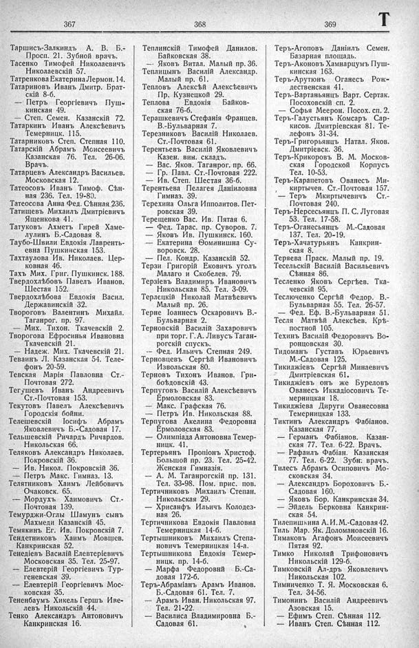

Лист источника 473
Скан

Распознанный текст
367
Таршисъ-Залкиндъ А. В. Б.-
Просп. 21. Зубной врачъ.
Тасенко Тимофей Николаевичъ
Николаевскій 57.
Татренкова Екатерина Лермон. 14.
Татариновъ Иванъ Дмитр. Брат-
скій 8-б.
— Петръ Георгіевичъ Пуш-
кинская 49.
— Степ. Семен. Казанскій 72.
Татаркинъ Иванъ Алексѣевичъ
Темерницк. 115.
Татарниковъ Степ. Степная 110.
Татарскій Абрамъ Моисеевичъ
Казанская 76. Тел. 26-06.
Врачъ.
Татарцевъ Александръ Васильев.
Московская 12.
Татеосовъ Иванъ Тимоф. Сѣн-
ная 236. Тел. 19-80.
Татеосова Анна Фед. Сѣнная 236.
Татищевъ Михаилъ Дмитріевичъ
Ященкова 41.
Татуковъ Ахметъ Гирей Хаме-
лулинъ Б.-Садовая 8.
Таубо-Швили Евдокія Лавренть-
евна Пушкинская 153.
Тахтаулова Ив. Николаев. Цер-
ковная 46.
Тахъ Мих. Григ. Пушкинск. 188.
Твердохлѣбовъ Павелъ Иванов.
Шестая 152.
Твердохлѣбова Евдокія Васил.
Державинскій 32.
Твороговъ Валентинъ Михайл.
Таганрог. пр. 97.
— Мих. Тихон. Ткачевскій 2.
Творогова Ефросинья Ивановна
Ткачевскій 21.
— Надеж. Мих. Ткачевскій 21.
Теваинъ Л. Казанская 54. Теле-
фонъ 20-59.
Тевская Марія Павловна Ст.-
Почтовая 272.
Тегушевъ Иванъ Андреевичъ
Ст.-Почтовая 153.
Текутовъ Павелъ Алексѣевичъ
Городскія бойни.
Телешевскій Іосифъ Абрамъ
Яковлевичъ Б.-Садовая 17.
Тельшевскій Ричардъ Ричардов.
Никольская 66.
Теляковъ Александръ Николаев.
Покровскій 36.
— Ив. Никол. Покровскій 36.
— Петръ Макс. Гимназ. 13.
Телятниковъ Хаимъ Лейбовичъ
Очаковск. 65.
— Мордухъ Хаимовичъ Ст.-
Почтовая 139.
Темурджи-Оглы Шамунъ сынъ
Махмеди Казанскій 45.
Темякинъ Ег. Ив. Покровскій 7.
Тендетниковъ Хаимъ Мовшев.
Канкринская 52.
Тенедіевъ Василій Елевтеріевичъ
Московская 35. Тел. 25-97.
— Елевтерій Георгіевичъ Тур-
геневская 39.
— Елевтерій Георгіевичъ Мос-
ковская 35.
Тененбаумъ Хикель Гершъ Иве-
левъ Никольскій 44.
Тенко Александръ Антоновичъ
Канкринская 16.
368
Теплинскій Тимофей Данилов.
Байковская 38.
— Яковъ Витал. Малый пр. 36.
Теплицынъ Василій Александр.
Малый пр. 61.
Тепловъ Алексѣй Алексѣевичъ
Пр. Кузнецкой 29.
Теплова Евдокія Байков-
ская 76-б.
Терашкевичъ Стефанія Францев.
В.-Бульварная 7.
Терезниковъ Василій Николаев.
Ст.-Почтовая 61.
Терентьевъ Василій Яковлевичъ
Казен. вин. складъ.
— Вас. Яков. Таганрог. пр. 66.
— Гр. Павл. Ст.-Почтовая 222.
— Ив. Степ. Шестая 36-б.
Терентьева Пелагея Даніиловна
Гимназ. 39.
Терехина Ольга Ипполитов. Пет-
ровская 39.
Терещенко Вас. Ив. Пятая 6.
— Фед. Тарас. пр. Суворов. 7.
— Яковъ Ив. Пушкинск. 160.
— Екатерина Ѳоминишна Су-
воровск. 28.
— Пел. Кондр. Казанскій 52.
Терзи Григорій Ековичъ уголъ
Малаго и Скобелев. 79.
Терзіевъ Владимиръ Ивановичъ
Никольская 85. Тел. 3-09.
Терлецкій Николай Матвѣевичъ
Малый пр. 26.
Терне Іоаннесъ Оскаровичъ В.-
Бульварная 2.
Терновскій Василій Захаровичъ
при торг. Г. А. Ливусъ Таган-
рогскій спускъ.
-- Фед. Ильичъ Степная 249.
Терновцевъ Сергѣй Ивановичъ
Извольская 80.
Терновъ Тихонъ Иванов. Гри-
боѣдовскій 43.
Терпуговъ Василій Алексѣевичъ
Ермоловская 83.
— Макс. Графская 76.
— Петръ Ив. Никольская 88.
Терпугова Акелина Федоровна
Ермоловская 83.
— Олимпіада Антоновна Темер-
ницк. 41.
Тертерьянъ Пропіонъ Христоф.
Большой пр. 23. Тел. 25-42.
Женская Гимназія.
— А. М. Таганрогскій пр. 131.
Тел. 33-98. Пом. прис. пов.
Тертичниковъ Михаилъ Степан.
Никольская 29.
— Хрисанфъ Ильичъ Колодез-
ная 26.
Тертичникова Евдокія Павловна
Темерницкая 14-б.
Тертышниковъ Михаилъ Степа-
новичъ Темерницкая 14-а.
Тертышникова Евдокія Темер-
ницк. пр. 14-б.
— Марфа Федоровнй Б.-Са-
довая 172-б.
Теръ-Абраміанъ Арамъ Иванов.
Б.-Садовая 61. Тел. 7.
— Арамъ Иван. Никольская 97.
Тел. 21-22.
— Василиса Владимировна Б.-
Садовая 61.
369
Т
Теръ-Агоповъ Даніилъ Семен.
Базарная площадь.
Теръ-Аконовъ Хампарцумъ Пуш-
кинская 163.
Теръ-Арутюнъ Оганесъ Рож-
дественская 41.
Теръ-Вартаньянцъ Варт. Сертак.
Посоховскій сп. 2.
— Софья Меерон. Посох. сп. 2.
Теръ-Галустьянъ Комсаръ Сар-
кисов. Дмитріевская 81. Те-
лефонъ 31-34.
Теръ-Григорьянцъ Натал. Яков.
Дмитріевск. 36.
Теръ-Крикоровъ В. М. Москов-
ская Городской Корпусъ
Тел. 10-53.
Теръ-Карапетовъ Ованесъ Ми-
киртычев. Ст.-Почтовая 157.
'— Теръ Мкиртычевичъ Ст.-
Почтовая 240.
Теръ-Нерсесьянцъ П. С. Луговая
53. Тел. 17-58.
Теръ-Оганесьянцъ М.-Садовая
137. Тел. 20-19.
Теръ-Хачатурьянъ Канкрин-
ская 8.
Теряева Праск. Малый пр. 19.
Тесельскій Василій Васильевичъ
Сѣнная 86.
Тесленко Яковъ Сергѣев. Тка-
чевскій 95.
Теслюченко Сергѣй Федор. В.-
Бульварная 55. Тел. 26-57.
— Фед. Еф. В.-Бульварная 51.
Тесля Матвѣй Алексѣев. Крѣ-
постной 105.
Техинъ Василій Федоровичъ Во-
ронцовская 30.
Тидоманъ Густавъ Юрьевичъ
М.-Садовая 125.
Тикиджіевъ Сергѣй Минаевичъ
Дмитріевская 61.
Тикиджіевъ онъ же Буреловъ
Ованесъ Иккадіосовичъ Те-
мерницкая 18.
Тикиджіева Дируги Ованесовна
Темерницкая 133.
Тиктинъ Александръ Фабіанов.
Казанская 77.
— Германъ Фабіанов. Казан-
ская 77. Тел. 6-22. Врачъ.
— Рафаилъ Фабіан. Казанская
77. Тел. 6-22. Зубн. врачъ.
Тилесъ Абрамъ Осиповичъ Мо-
сковская 34.
— Александръ Бороховичъ Б.-
Садовая 160.
— Яковъ Бор. Канкринская 34.
— Эйдель Берковна Канкрин-
ская 54.
Тилепишкина А. И. М.-Садовая 42.
Тиль Мар. Як. Доломановскій 16.
Тимаковъ Агафонъ Моисеевичъ
Пятая 92.
Тимко Николай Трифоновичъ
Никольскій 129-б.
Тимковскій Ал-дръ Яковлевичъ
Никольская 102.
Тимниченко Т. Я. Московская 6.
Тел. 34-56.
Тимонинъ Василій Андреевичъ
Азовская 15.
— Ефимъ Степ. Сѣнная 112.
— Иванъ Степ. Сѣнная 112.